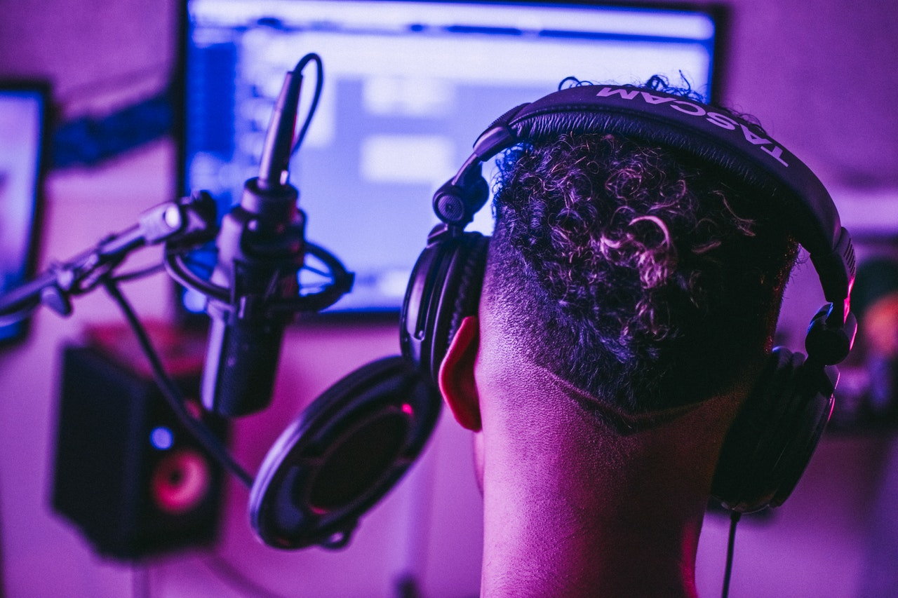
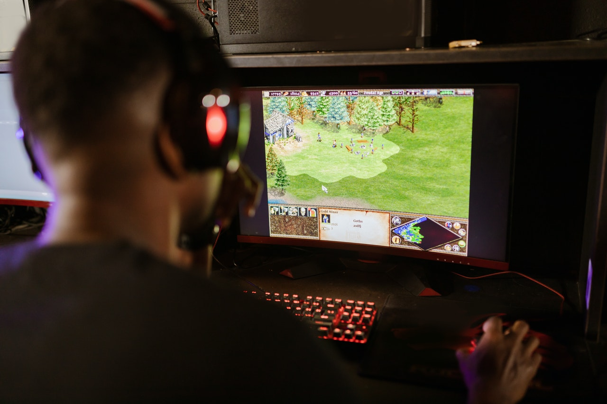

Quem sou eu?


Docente e produtor na area musical, com experiência com arranjos musicais, gestão de programas de educação e musica. Musico de sessão para gravação e atualmente é professor de linguagem musical, teoria e hârmonia funcional.
Estudante de linguagens de programação, com o objetivo de me desenvolver como Fulll-Stack. Minha rota de aprendizagem tem sido inicialmente com cursos de logica de programação e tenho realizado cursos de HTML, CSS e Javascript.
Amante do mundo e-sport, fiel seguidor da comunidade Dota 2, tem participado em campeonatos em nivel inter-universitario de e-sport competindo contra equipes de distintas cidades.
